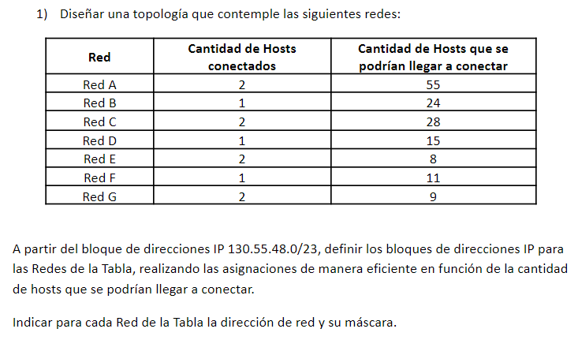
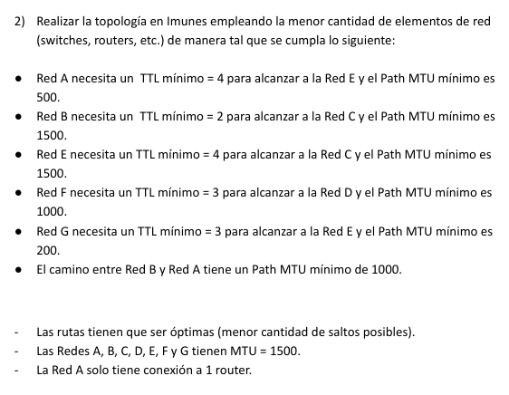
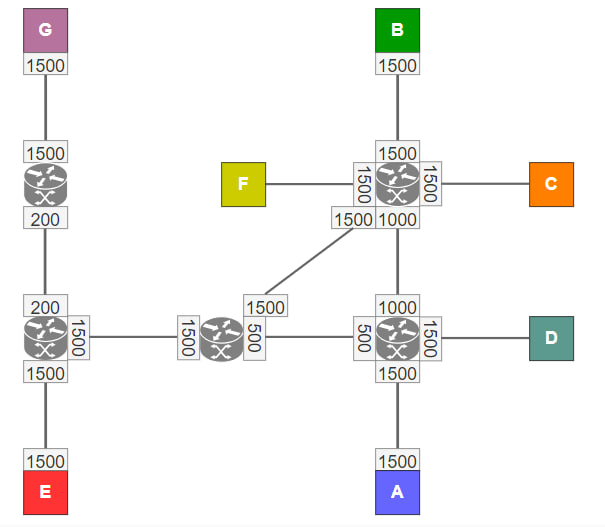
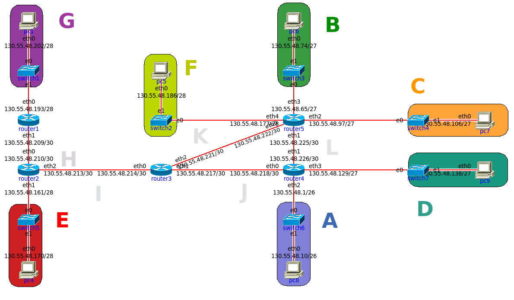
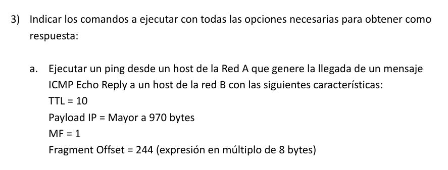

COMUNICACIÓN DE DATOS - TP LAN
-
Alumno: Lautaro De Lucía
-
Padrón: 100203
-
Fecha: 06/11/2023

Dada la máscara /23, determinamos el espacio designado para red y host respectivamente:
D:130.55.48.0/23
B:10000010.00110111.00110000.00000000
M:1111111.11111111.11111110.00000000
B&M:10000010.00110111.00110000.00000000
Tenemos un total de 9 dígitos para sub-netting y asignación de hosts.
Como ningúna red excede un umbral de 26=64 hosts a conectarse, podemos utilizar los dígitos 7, 8 y 9 para el subnetting, obteniendo de esa forma 7 redes con espacio para 64 hosts para cada uno. Sin embargo, esta no es una asignación eficiente, ya que tenemos información de la cantidad de límite de hosts para cada red, siendo muchas de estas muy inferiores a 64 hosts.
Si queremos hacer una asignación eficiente, conviene determinar el tamaño mínimo de máscara de sub-red para cada Red:
| Red |
MaxHosts |
MinBits |
Maˊscara |
Rango Total |
| A |
55 |
6 |
/26 |
64 |
| B |
24 |
5 |
/27 |
32 |
| C |
28 |
5 |
/27 |
32 |
| D |
15 |
5 |
/27 |
32 |
| E |
8 |
4 |
/28 |
16 |
| F |
11 |
4 |
/28 |
16 |
| G |
9 |
4 |
/28 |
16 |
- Obs
Notar que utilizamos 32bits para la red D, ya que una máscara de sub-red de 16 bits solo permite 14 espacios para hosts, teniendo que reservar 2 espacios para red y broadcast respectivamente. El Rango para la identificación de hosts implica restar 2 a el rango total.
Luego, podemos hacer un sub-netting de la forma:
| Red |
Direccioˊn |
Rango |
| A |
130.55.48.0/26 |
130.55.48.0−130.55.48.63 |
| B |
130.55.48.64/27 |
130.55.48.64−130.55.48.95 |
| C |
130.55.48.96/27 |
130.55.48.96−130.55.48.127 |
| D |
130.55.48.128/27 |
130.55.48.128−130.55.48.159 |
| E |
130.55.48.160/28 |
130.55.48.160−130.55.48.175 |
| F |
130.55.48.176/28 |
130.55.48.176−130.55.48.191 |
| G |
130.55.48.192/28 |
130.55.48.192−130.55.48.207 |

Como criterio de diseño, consideramos preferible que todas las interfaces en una ruta específica tengan el mismo MTU. Esto a modo de evitar la fragmentación de paquetes, que puede causar una sobrecarga innecesaria y potencialmente reducir el rendimiento.
Con esto, encontramos que la cantidad mínima de routers que nos permiten obtener un diseño que cumpla con todos los requisitos es cinco.
A continuación, se muestra un diagrama que muestra la topología de nuestra red. Es fácil ver que se cumplen las condiciones de el enunciado.

La topología en IMUNES es la de la figura:

Donde se definen sub-redes punto a punto H,I,J,K,L para los enlaces entre routers.
| Red |
Dirección |
Rango |
| H |
130.55.48.208/30 |
130.55.48.208−130.55.48.211 |
| I |
130.55.48.212/30 |
130.55.48.212−130.55.48.215 |
| J |
130.55.48.216/30 |
130.55.48.216−130.55.48.219 |
| K |
130.55.48.220/30 |
130.55.48.220−130.55.48.223 |
| L |
130.55.48.224/30 |
130.55.48.224−130.55.48.227 |
